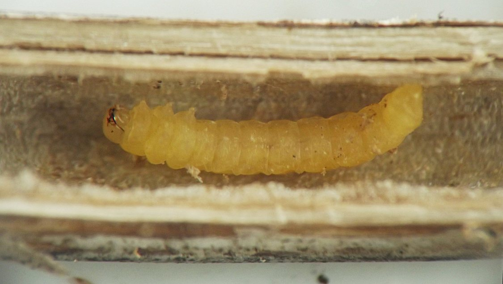
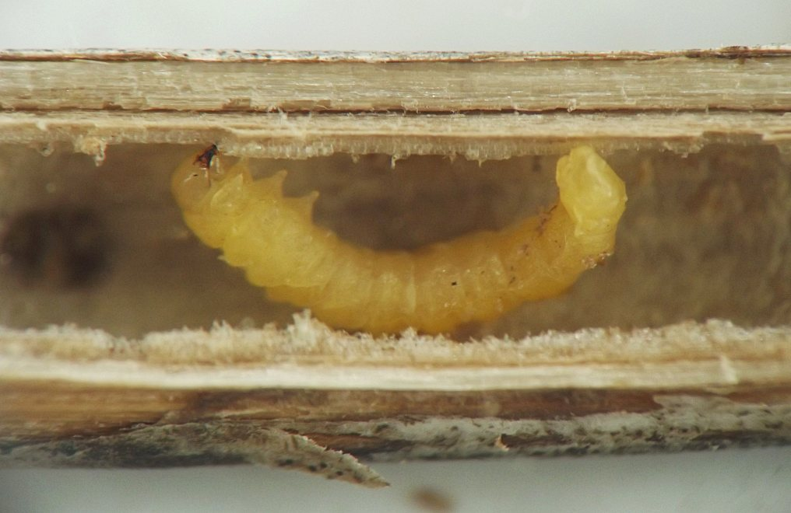
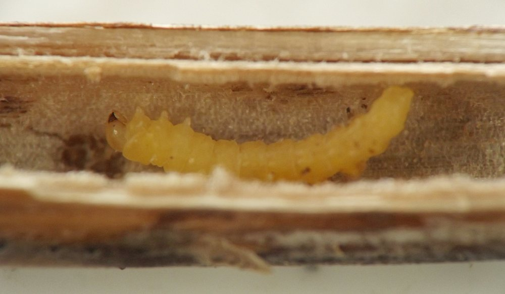
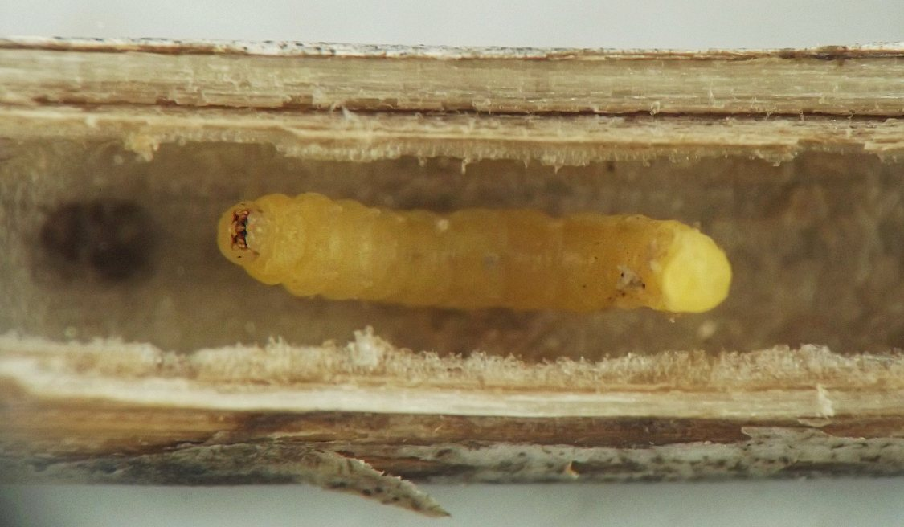
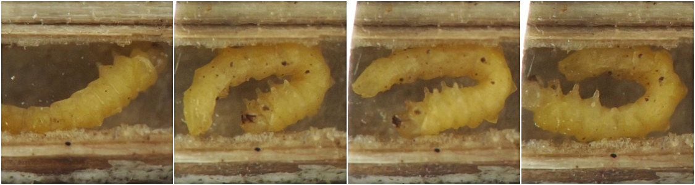
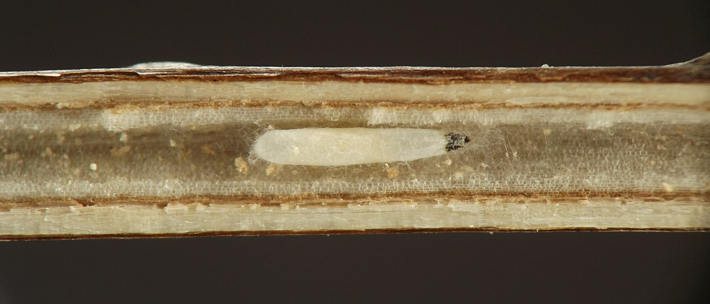
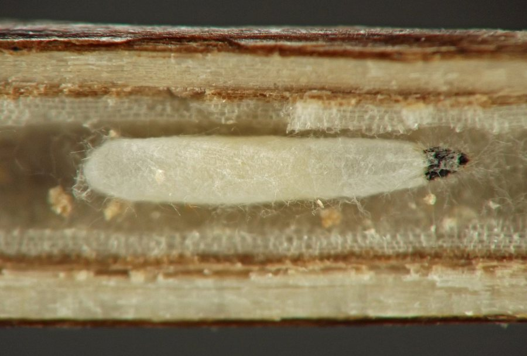

Stem borer (Coleoptera: Mordellidae) in Monarda
| Record no.: | 0652 |
|---|---|
| Feeding guild: | Stem borer |
| Taxonomy: | Coleoptera: Mordellidae |
| Stages observed: | trace, larva |
| Distribution observed: | IA |
| Hosts in Monarda: | M. fistulosa (bee balm, wild bergamot) |
I reared an adult mordellid from Monarda stems (evidently overwintered dead stems from the previous growing season) in early July, 2017, but did not record details of the larva's or adult's appearance.
In February 2023, while inspecting dead stems of the host, I encountered two cocoons (one per stem) that appeared to belong to parasitoid wasps that had fed on the insect responsible for tunneling the stems. The cocoons resembled those of mordellid parasitoids I have found in stems of other mint family plants. I saved them for rearing, but in reviewing my notes while preparing this report, I was not immediately able to find whether I reared adult wasps from the cocoons.
Finally, in March 2024 I located and photographed a mordellid larva overwintering in a dead stem of the host. It was yellow in color and very active.

 Prev
Prev
{kind=link}
{kind=link}

{kind=link}

{kind=link}

{kind=link}

{kind=link}

{kind=link}

Page created: February 13, 2026. Last update: March 28, 2026